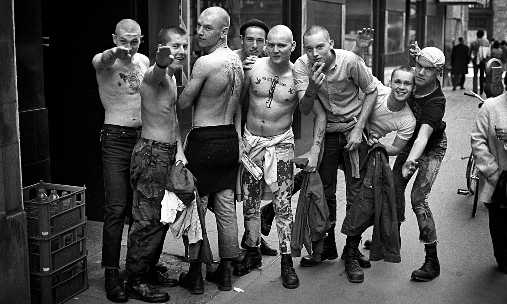

Скінхеди кінця 1960-х, можна сказати, були продуктом мод-культури, яка розвивалася під сильною дією ямайської культури, що прийшла до Англії з іммігрантами рудбоями (Rudeboy — грубіян). Моди (англ. mod), своєю чергою, були вихідцями з робочого класу. Бути модом вважалося особливим шиком у британської молоді середини 60-х XX століття. Моди вдягалися дуже акуратно, носили дорогі костюми, Fred Perry, Ben Sherman, Lee Coper — ці фірми, що випускають стильний одяг, були дуже популярні серед Модів. Через цей фетиш Модів часто звинувачували в зраді робітничого класу, оскільки Моди мало чим відрізнялися від молоді робочого класу, але витрачали на весь цей одяг велику кількість грошей. Дівчата Моди любили сильний макіяж і неяскраву помаду. До речі, на відміну від рокерів (Rockers), популярної тоді культури у молоді, Моди мали у своїх рядах людей обох статей. Окрім цивільного одягу, Мода завжди можна було пізнати за моторолером. Багато з тих, хто мав цей засіб пересування, називали себе Scooterists (букв. «Скутеристи», яких теж можна вважати побічним продуктом мод-культури), зазвичай вони прикрашали свої скутери дзеркалами (іноді до двох десятків) та іншими блискучими предметами(хромом, глушниками, феньками). Також скутерами захоплювалися і футбольні фанати (hooligans). Згодом з'явилися перші hard-mods або ж Скінхеди. Перші скінхеди були недалекі від культури Модів (не даремно вони називали себе hard-mods) — вони носили костюми і були такими ж модниками, але вони додавали до субкультури і свій фетиш. Перші скінхеди віддавали перевагу американському одягу: Levi Strauss Jeans і Alpha Flight Jackets, також в моду почали входити вузькі підтяжки (braces) і важке робітниче взуття зі сталевими носами Dr Marten (або просто — Doc's). Ця зміна стилю одягу була пов'язана з тим, що Скінхеди в на відміну від Модів старалися показати своє коріння — вони називали себе дітьми робітничого класу (англ. working class kids). Бритоголові (багато хто з яких працював в порту вантажниками) слухали музику іммігрантів з Ямайки — рудбоїв. Це було в основному ска і rocksteady («спокійна доля»), ті два стилі, які були попередниками сучасного реггі. Вдень скінхеди ходили в школу, на роботу (якщо могли таку знайти, оскільки в Англії в ті часи був високий рівень безробіття). Увечері, якщо вони не були зайняті сутичками та бійками, скінхеди ходили в dance halls («танцювальні зали») слухати ска і рокстеді. Скінхеди любили пиво, на відміну від модів, що зловживали амфетаміном та іншими наркотиками і, на відміну від рудбоїв, вони не палили марихуану. Скінхеди-дівчата одягалися подібно до парубків, стриглися коротко і теж мали масу прикрощів і проблем з поліцією і ворожими молодіжними угрупуваннями. Rudegirls, skinhead-girls і mode-girls також носили мініспідниці, які в у той час були дуже популярні і розглядалися як епатаж перед консервативними батьками. Наприкінці 60-х скінхедів стало надто багато. Лисі голови були скрізь. Увечері банди скінхедів влаштовували сутички прямо на вулицях. Всі були молоді і по-справжньому щасливі. 1969 рік по праву вважається вищою точкою розвитку руху скінхедів. На початку 70-х років рух скінхедів зростав у порівнянні з іншими молодіжними контркультурними рухами, але, як не дивно, на вулицях вони стали менш помітні. Багато скінхедів ставали більш розсудливими, одружувалися, займалися вихованням дітей, але все-таки залишалися відданими своєму корінню. З усім тим, рух пішов на спад.
Друга хвиля руху скінхедів почалася у Великій Британії у кінці 70-х. Імпульсом до цього став Панк-рок. Панк-рок підірвав манірну і холодну Англію. Панк-рок виглядав диким, грубим, агресивним. Він лякав домогосподарок, респектабельних громадян та інших людей. Молодь бісилася, випліскувала свою негативну енергію, плювала на засади пуританського британського товариства. Проте робоча молодь шукала більш жорстке і швидке звучання для гімнів свого класу. До того ж скоро стало очевидним, що панк-рок — це просто студентська бунтарська музика, музика для коледжу. Брудні і смердючі вулиці, повні небезпек потребували іншої музики. Так з'явилася музика повна непідробної агресії і ненависті до правлячого класу багачів, до модних діток, музика розповідає про нелегкі будні робочою молоді. Журналіст газети Sounds Гарі Бушелл (Garry Bushell) назвав цю музику просто — «Oi»!. Це був панк, але це вже був панк для дітей робочого класу. Це була музика, що повернула панк з студентських гуртожитків на вулиці. Саме тому, щоб показати, що це реальний панк, Oi! ще називали streetpunk («вуличний панк»). Популярність стрітпанку стала свідоцтвом відродження руху бритоголових. Більшість скінів другої хвилі нічого не знали про спадщину і про своє коріння: про модів, про ска, про рудбоїв. Старі скінхеди постійно критикували і лаяли молоду порість за нововведення. Приміром, скіни 69-го всі так само носили одяг Ben Sherman, Fred Perry, блакитні джинси Levi's, коли скіни 79-го носили військові штани (військову уніформу взагалі), важкі черевики різних фірм, куртки американських льотчиків (бомбер), а також спортивний одяг таких фірм, як Lonsdale або Umbro. Себе вони називали Bald Punks. У США скіни були ще віддаленішими від свого коріння і тяжіли до хвилі hardcore, що зародилася у Нью-Йорку. Стрітпанк для Англії був подібний хардкору в США. До прикладу, американські скіни 80-х практично нічого не знали і не чули про ска або Oi!. Але, як і їхні брати в Англії вони носили робочі черевики, джинси, змішуючи стиль одягу традиційних скінхедів і панків (спущені підтяжки — були запозичені у панків). Hardcore Skins були сильнішими й жорстокішими, ніж їхні сучасники — Punk — Skins в Англії. Та й у кримінальних зведеннях їх згадували вже частіше, ніж у 1969-му. Звичайно, праві не могли не стриматися від вербування у свої ряди молодих, накручених молодиків, повних агресії. І партії, подібно National Front, стали створювати із скінхедів образ footsoldiers (штурмовиків). Скінхеди зразка 69-го або ж traditional («традиційні, трад-скіни») як і раніше залишалися на антирасистських позиціях, як і більшість скінів першої хвилі, фанатіли від ска, скінхед-реггі і чорної музики соул («soul»). Вони відвідували чорні dancehalls, називали чорних, як «darkies» і в той самий час підтримували ідеали робітничого класу, і лівих політиків. Англія ще пам'ятала Другу Світову війну, і тому гордістю для кожного патріотичний налагодженого громадянина вважалося залишатися на позиціях антирасизму. Але, якраз кінець 70-х ознаменувався великим поділом в історії скін-культури. Група панків сформувала колектив Skrewdriver («викрутка») і записала хороший альбом в стилі стрітпанк. Проте вже через рік соліст Викрутки розігнав старий склад і перетворив цей колектив в скінхед-групу. Так сталося через те, що у той час британські націоналісти — Національний Фронт — якраз шукали серед Oi!-груп тих, хто погодився б за непоганий гонорар прийняти і почати пропагувати расистську позицію серед скінхедів. Ян Стюарт (ISD) був першим і єдиним, хто погодився. Так почали створювати праве крило скінхед-сцени і пропагувати образ скіна-расиста. Ніхто й ніколи не любив скінхедів за їхню агресивність. Суспільство вважало їх головорізами і хуліганами, відморозками і покидьками (rejected). Але навіть тоді їх ніхто не називав расистами. Проте в 1984 році на «Donahue' show» (американське телешоу) з'явився расист, одягнений як скінхед. Це було шоком і ударом по всьому руху скінхедів! Разом з жадібними до сенсацій ЗМІ міф про скінхедів-расистів роздували Національний Фронт і продажна група Skrewdriver. Вдосталь наївшись правої пропаганди, громадяни вже бачили в кожному бритоголового расиста. Погана репутація зіграла на руку тільки правим партіям. Багато молодих неонацистів, що були завжди далеко від робочого класу і скінхед-музики, стали називати себе бритоголовими й одягатися як скіни, насправді будучи простими позерами.
Скінхеди пішли в тінь, лише зрідка жовта преса друкувала сенсаційні статті про витівки «скінхедів». Проте справжні скіни завжди залишалися вірні своєму корінню. Завдяки тому, що добробут західного суспільства зростав, на початку 90-х років XX століття намітилось чергове зростання руху. Діставши можливість за відносно невеликі гроші купити апарат і створити групу, багато молодих людей користувалися нею. Завдяки виникненню інтернету, стало можливим знаходити друзів і однодумців в різних куточках. Це вселяло упевненість, що ти не один, що ти робиш потрібну справу. Крім того, старі групи, як виявилось, нікуди не зникли — вони були поруч, і по-колишньому несли свої ідеї у маси. Третьою хвилею стали скінхеди середини 90-х. Хвиля скінхед-руху стала підніматися. Багато з тих, хто поголився понад 15 років тому, почали з'являтися на вулицях і брати участь в розвитку скінхед-сцени. 17-18 літні панки почали голити собі голови, лишаючись ірокезів і смітників. Стали з'являтися скіни, які ніколи не були панками, а просто багато читали про субкультури, саме завдяки тому, що з'являється знову інтерес до скінхед-руху, стали брати активну участь у русі. У всьому світі виникла безліч відмінних скінхед-груп, а на хвилі інтересу, що відроджується, до музики Oi!, ска і до коріння скінхед-руху, взагалі, старі групи з-поміж тих, хто вже давно «повісив черевики на цвях» збиралися знову. Сучасні скінхеди Європи і Заходу — це крутий заміс з модів/рудбоїв кінця 1960-х і панк/хардкор скінів початку 1980-х. Їхні музичні пристрасті тягнуться від реггі до сучасного хардкору, а також ска, roksteady, рокабіллі, панк, Oi!, соул. Деякі слухають тільки скінхед-реггі, деякі лише Oi! або панк. Звичайно, це можна назвати модою, проте з часів першої хвилі багато води витекло. І зараз не можна залишатися скінхедом і не знати при цьому про своє коріння. Хтось вірить, що Skrewdriver були першою скінівською групою, хтось стверджує, що все футбольні хулігани — White Power-и, проте більшість скінів пам'ятає, що імпульс до розвитку скінхед-руху дали одна-дві пластинки з ямайським ска одного дня привезені з далекого сонячного острова в Англію, а своєю зачіскою скіни зобов'язані ямайським іммігрантам — рудбоям.
Зовнішній вигляд скінхедів багато в чому повторює зовнішній вигляд модів (поло Fred Perry, джинси Levi's і так далі), але окрім цього має і свої особливості. В основному, зовнішній вигляд скінхедів можна описати, як «черевики і підтяжки» — одні з основних елементів повсякденного стилю скінхедів. Елементи одягу перераховані в пісні «Skinhead Jamboree» групи Symarip, записаної в 1969 році. Детальний опис зовнішнього вигляду можна знайти в книзі Ніка Найта — Skinhead[1]. Книга посилається на статтю[2] Йана Уолкера, про велику групу скінхедів на матчі в 1968 році, де він дає опис їхнього зовнішнього вигляду. Коротка стрижка — ще одна частина зовнішнього вигляду. Цей стиль був запозичений в модів, які своєю чергою запозичили коротку стрижку в вест-індійців.